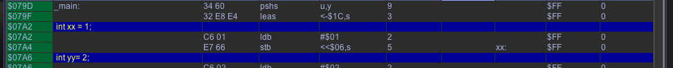

dissi with c-lines
Note
The debugging in "C" is not that well tested, should errors occur while debugging (compiler errors?), than switch debugging off and tell me what happened, so I can enhance Vide!)
(In order to be able to show the "C" contents in the assembler listing, I internally change the "C" file and compile it with different settings - so there might be errors, that only occur while using debug settings!) (see also "Optimizing C" and search for "EnrichmentOff")
Vedi is able to generate additional "C" debug information. To enable this go to your current C-Project, open the project configuration and check the checkbox "C debugging".
If enabled, Vide will generate for each "C"-File additional information.
Note:
As of now this only works for "*.c" files, included files are not processed in any way, even if included from in a "c" file that is otherwise processed.
In dissi additional "C"-lines are places within the disassembled sources, like:
dissi with c-lines
Using Vide you can also set breakpoints to C-lines (if above restrictions are observed):

breakpoint from C-sources
That is all there is for now regarding debugging "C". The rest is the same a debugging assembler sources, mainly using dissi and its children.
It is not possible yet to define watches for C-variables using the editor (Vedi). However global variables can be viewed as always using dissi and vari.
Just remember, that "C"-Variables have a leading underscore "_".
Local variables are located on the stack - there is no "easy" way to watch them (yet). If you need to, you can determine their stack address and add a watch manually via dissi command line, like:
watch $CBC9 1
Using the debugger... There is no special stack frame display available for local "C" variables.
This is mainly due to the fact, that local variables can have the same names on one stackframe - and to display the varnames as stack addresses could possibly have double meanings.
Example:
__INLINE void testFunc()
{
int xx = 1;
...
}
int main(void)
{
int xx = 2;
testFunc();
here
...
}
At the position of here (well INSIDE the inline function that is) the variable "xx" would be two times on the stack, once from main(), and once from testFunc(). One would (example) accessed with
stb 6,s
the other possibly with
stb 7,s
or the like. Naming the offsets (6 and 7 in this case) like the variable would be crossly confusing.
GCC generates comments, when accessing local variable. When you look at the comment section of dissi, you will see the variable name.

local var display in comment